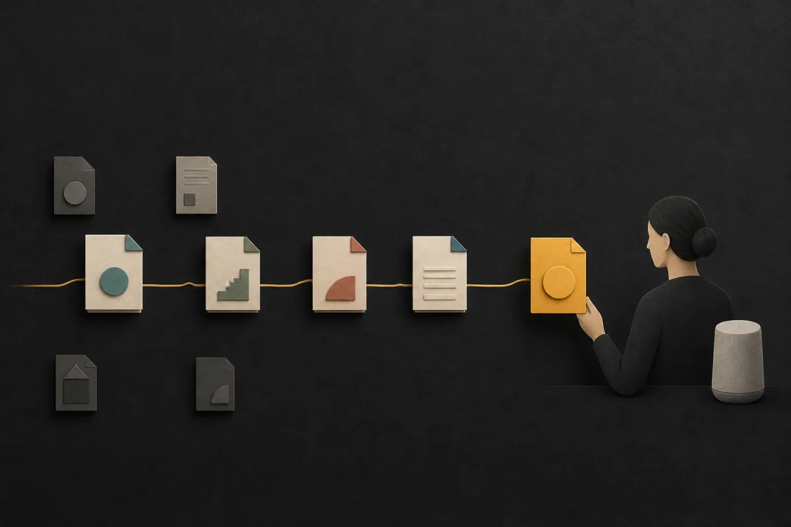

Without ORG.md
Many copies
The same rule is rewritten in several places. Nobody knows which version to trust.
An open standard for organisational guidance
ORG.md keeps the important words, rules, decisions and owners that shape work in small, reviewed bundles.
The working v0.5 proof joins one company-to-team path and creates guidance for review.

Why it exists
Important guidance is copied into prompts, documents and people's heads. Each copy can slowly become different.
Without ORG.md
The same rule is rewritten in several places. Nobody knows which version to trust.
With ORG.md
Teams own small pieces. A relevant, approved view is created when it is needed.
How the pieces become one useful view
Example path
The proof combines the recorded guidance on this one selected path. It does not choose different guidance for each task.
Other teams
Finance and other regions are not included in this example view. That does not control who can open the source files.
ORG.md is the standard, not one enormous company document. The design intent is for large organisations to use many small, owned bundles.
The v0.5.0 proof reads one local company-to-team path and produces advisory text for review. It does not verify who approved a change, combine sources from different repositories, control access, publish approved guidance, enforce actions or prove performance at enterprise scale.
Try it
The example is real output from the v0.5 proof. Desk shows how the editing experience could become simpler.
Change one recorded stage and see which rule remains in use.
Open the example → Design conceptSee how a nontechnical owner could work with ORG.md while Git keeps the history underneath.
Explore Desk →For builders: source · CLI guide · draft specification